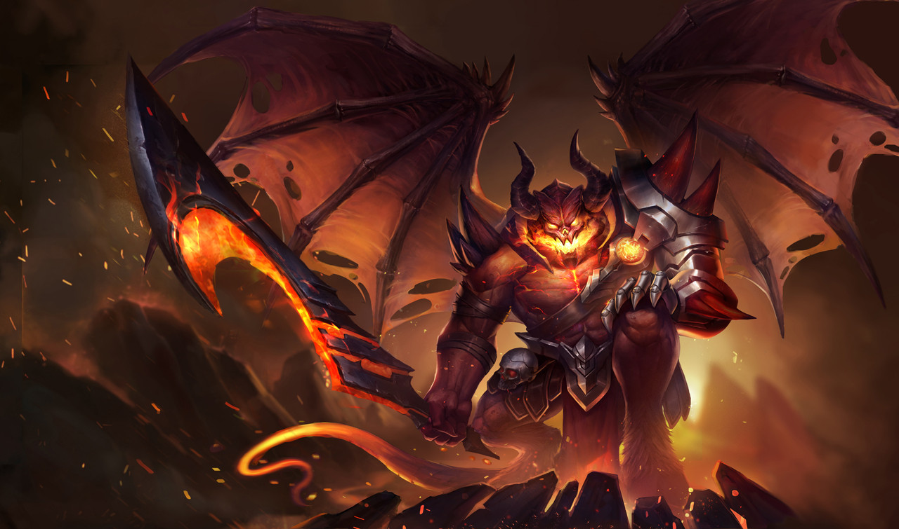

MALOCH
Tiểu sử
"Tra tấn mang lại đau khổ, và đau khổ mang đến sức mạnh."
Sinh ra từ nơi sâu thẳm nhất Địa Ngục, Maloch biết rõ mọi hình phạt tàn nhẫn nhất tại đây. Không gì trên đời làm hắn thích thú hơn việc bóp nát tâm hồn của những kẻ bất hạnh.
Tiếng gào thét của sự đau đớn, nỗi thống khổ giống như một điệu nhạc Valse đối với Maloch vậy và sức mạnh của hắn cũng đến từ đó. Trong cái nơi ánh sáng không thể chiếu đến này, Cai Ngục là kẻ thống trị, còn Maloch là Vua của những kẻ thống trị.
"Thuộc hạ của ta luôn khao khát quyền lực của ta, nhưng chúng sẽ không bao giờ có được nó!"
Hắn luôn tự hào về sự am hiểu của bản thân hay những mưu hèn kế bẩn bản thân nghĩ ra. Một trong những thú tiêu khiển yêu thích của Maloch chính là đích thân tra tấn các Cai Ngục cho đến khi linh hồn của chúng vỡ nát.
Nhưng qua thời gian, thú vui đó dần trở nên nhàm chán đối với Maloch.
"Tất cả linh hồn trên thế giới này đều sẽ phải khóc lóc, van xin và bị hủy diệt dưới chân ta!"
Với khát vọng tột cùng đó, Maloch rời bỏ Vương quốc của mình để tham gia đấu trường huyền thoại.
"Ta sẽ cho các người thấy nỗi đau đớn thật sự là như thế nào!"
Sinh ra từ nơi sâu thẳm nhất Địa Ngục, Maloch biết rõ mọi hình phạt tàn nhẫn nhất tại đây. Không gì trên đời làm hắn thích thú hơn việc bóp nát tâm hồn của những kẻ bất hạnh.
Tiếng gào thét của sự đau đớn, nỗi thống khổ giống như một điệu nhạc Valse đối với Maloch vậy và sức mạnh của hắn cũng đến từ đó. Trong cái nơi ánh sáng không thể chiếu đến này, Cai Ngục là kẻ thống trị, còn Maloch là Vua của những kẻ thống trị.
"Thuộc hạ của ta luôn khao khát quyền lực của ta, nhưng chúng sẽ không bao giờ có được nó!"
Hắn luôn tự hào về sự am hiểu của bản thân hay những mưu hèn kế bẩn bản thân nghĩ ra. Một trong những thú tiêu khiển yêu thích của Maloch chính là đích thân tra tấn các Cai Ngục cho đến khi linh hồn của chúng vỡ nát.
Nhưng qua thời gian, thú vui đó dần trở nên nhàm chán đối với Maloch.
"Tất cả linh hồn trên thế giới này đều sẽ phải khóc lóc, van xin và bị hủy diệt dưới chân ta!"
Với khát vọng tột cùng đó, Maloch rời bỏ Vương quốc của mình để tham gia đấu trường huyền thoại.
"Ta sẽ cho các người thấy nỗi đau đớn thật sự là như thế nào!"
CÔNG TY CỔ PHẦN GIẢI TRÍ VÀ THỂ THAO ĐIỆN TỬ VIỆT NAM
Văn phòng đại diện: Tầng 29, tòa nhà Trung tâm Lotte Hà Nội, số 54, đường Liễu Giai, Phường Cống Vị, Quận Ba Đình,
Thành phố Hà Nội, Việt Nam
Điện thoại: (04)7305-3939 | Fax: (04)3759-2429